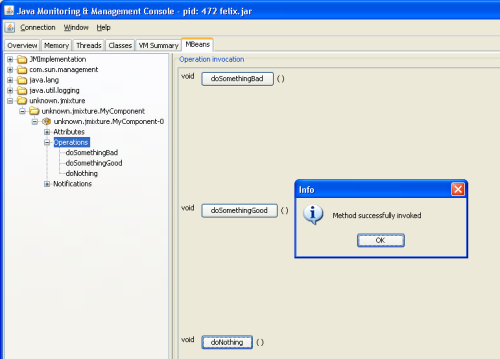

iPOJO JMX HandlerThis handler provides JMX management of component instance. It could be useful to manage instance remotely. As the handler exposes MBeans, you must have a MBean server running on your platform (as the platform MBean server or the MOSGi MBean Server). FeaturesThe handler allows to:
PrerequisitesTo be functional this handler must register on an MBean Server,thus you obviously need it. Several servers are currently supported : the standard platform MBean server (included in the JDK), MOSGi (provided with Felix), ...
You can find MOSGi documentation on http://cwiki.apache.org/FELIX/mosgi-managed-osgi-framework.html DownloadThe JMX handler is available in the Felix trunk in the iPOJO project. See the Download page to download and compile these sources. How to use itThe handler needs to be added in the metadata.xml, you just add a namespace (e.g., jmx) : <ipojo xmlns:jmx="org.apache.felix.ipojo.handlers.jmx"> ... </ipojo> So, you could now expose in JMX properties and methods of your component. They are surrounded by the <jmx:config> <jmx:config> <property name="message" field="m_msg" rights="w" notification="true"/> <method name="doSomethingBad"/> <method name="doSomethingGood"/> </jmx:config> Note: Be careful that the argument and return type of methods must be serializable. In case of several methods have the same name, each of them will be exposed. JMX Handler optionsHere you can find all configuration options of the JMX handler. There are two kinds of manageable elements : properties and methods. First is described the global configuration of the handler. Then elements can be configured, using several attributes, as described below. Global handler attributes
Properties attributes
Methods attributes
ExamplesIn this part, we will give you a complete example of a component managed with JMX, using the JConsole provided by the SUN JDK. Exposing AttributesIn first time we create a simple component named MyComponent. We have add two fields named m_level (int) and m_message (String). public class MyComponent ... { // Exposed attributes private String m_message; private int m_level; } We expose now the attributes in the jmx:config <?xml version="1.0" encoding="UTF-8"?> <iPOJO xmlns:jmx="org.apache.felix.ipojo.handlers.jmx"> <component className="...MyComponent" architecture="true" immediate="true"> <provides/> <jmx:config> <!-- Exposed properties --> <property field="m_level" name="The level" rights="r"/> <property field="m_message" name="The message" rights="w"/> </jmx:config> </component> <instance component="...MyComponent"/> </iPOJO> Now, we could get and write the properties in the JConsole : Exposing MethodsWe could now add methods in the initial class : /** Do something good */ public void doSomethingGood() { ... } /** Do something bad */ public void doSomethingBad() { ... } /** Do nothing */ public void doNothing() { ... } We add corresponding tags in the metadata to expose these methods: <!-- Exposed methods --> <method name="doSomethingGood" description="Do something good."/> <method name="doSomethingBad" description="Do something bad."/> <method name="doNothing" description="Do absolutely nothing."/> Now the three methods are exposed in the operations tab of the JConsole. We can invoked these methods :  Attribute Notifications:You could subscribe to attribute notification by adding the notification attribute in property tag. In our example if we want to be notified when m_level is modified, we change the property line in the metatada like this: <property field="m_level" name="The level" rights="r" notification="true"/> So now if we change the string through JConsole or if the POJO is modified in other way, a notification will be sent to every listener. For example, we subscribe in the notification tab, and we get notification when the message changes :
|
OverviewGetting StartedUser GuideToolsDeveloper GuideMisc & Contact
|